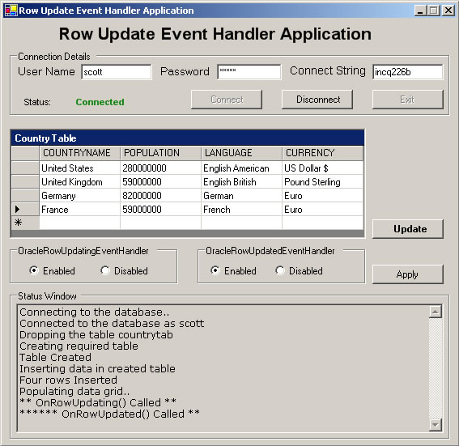

RowUpdatingEventHandler
and RowUpdatedEventHandler sample using ODP.NET
Table of Contents
The purpose of this sample application is to demonstrate
how one can trap the OracleRowUpdatingEvent and OracleRowUpdatedEvent
using VB.NET.
Oracle Data Provider for .NET (ODP.NET) is an implementation
of a data provider for the Oracle database. ODP.NET uses Oracle native
APIs to offer fast and reliable access to Oracle data and features from
any .NET application. ODP.NET is provided in Oracle.ManagedDataAccesss.dll
assembly and provides two namespaces :
- The
Oracle.ManagedDataAccess.Client namespace
contains ODP.NET classes.
- The
Oracle.ManagedDataAccess.Types namespace
contains the ODP.NET Types.
Event handling is the mechanism by which .NET
components register themselves with event generators and then get notified
with the help of a callback when the event is fired. ODP.NET too allows
users to register event handlers and get notified when the event of particular
interest occurs. In this application we demonstrate how one can trap the
OracleDataAdapter.RowUpdating and OracleDataAdapter.RowUpdated
events. OracleDataAdapter.RowUpdating event is fired
before a row is updated. OracleDataAdapter.RowUpdated
event is fired after a row is updated.
This allows applications to process this event and initiate appropriate
action.
When this sample application
is run, users should supply a username, password and connect string
to connect to a database. The application creates the required table to
set up this application. By default, both RowUpdating and RowUpdated event
handlers are enabled. Users can use the radio buttons to enable, disable
the event handlers. They must click the "Apply" button to carry
out actual eventHandler registration or de-registration. If the event
handler is enabled and country table is updated then corresponding event
handler code is executed. Code inside the eventHandler function (Subroutine)
prints a line in the status window indicating that the function had been
invoked.

Figure 1.1: Screen shot of the Main Screen
-
VB.NET installed with Visual Studio
2005/2008/2010/2012.
-
Oracle11g
Database or higher running SQL*Net TCP/IP listener (can be downloaded
here )
-
Oracle
Data Provider for .NET (ODP.NET) (can be downloaded
here
)
Unzip RowUpdateEventHandler.zip
using Winzip or command utility to your convenient directory referred
to as <Extract_Dir>.
Extraction of the zip file results in the creation of 'RowUpdateEventHandler'
directory. Refer Description
of Sample Files section for more details.
No special database setup is
required. When this application starts it creates the required table 'COUNTRYTAB'
and inserts necessary data. You must ensure that
the database user has necessary privileges to drop,create and update tables.
1. Open RowUpdateEventHandler.sln
using Visual Studio .NET from <Extract_Dir>\RowUpdateEventHandler\src
folder.
2. Ensure that the following .NET
Component References have been added to RowUpdateEventHandler
project:
Oracle.ManagedDataAccess.
System,
System.Data,
System.Drawing,
System.Windows.Forms,
System.XML,
To add the reference to above .NET Components
a)Go to Menu ->View-> Solution Explorer.
b)Right click on RowUpdateEventHandler
project, choose 'Add Reference'.
c)Choose the above .NET Components from the list displayed.
d)Click 'Select', then OK.
e) The chosen .NET component gets added to the project.
4. Build and run the sample.
1. When the Main form of the application appears as
shown in figure 1.1 enter the username , password and connect string as
per your database setting and press "Connect" button.
2. You may update Language or Currency columns. Other
columns are not updatable.
2. To update the rows in the DataGrid
press "Update" button. You may enable or disable the eventhandlers
by using radio buttons but you must press "Apply" button to
carry out actual handler registration or de-registration process.
Note: The database user used to execute this application must have
necessary privileges to create, delete and modify tables.
Following is the directory structure of the RowUpdateEventHandler.zip
:
| Directory |
File Name |
Description |
RowUpdateEventHandler\doc |
Readme.html |
This file |
| otn.css |
Stylesheet used in Readme.html |
RowUpdateEventHandler\doc\images |
*.jpg |
This folder contains images used in
the Readme.html file |
RowUpdateEventHandler\src |
RowUpdateEventHandler.sln |
Visual Studio Solution |
| RowUpdateEventHandler.suo |
Solution User option (this file gets
automatically generated when a Visual Studio Solution is created) |
RowUpdateEventHandler\src\ |
AssemblyInfo.vb |
This file stores information about
generated assembly |
| DBAccess.vb |
This file has the code that accesses
database and has the RowUpdating and RowUpdated event handlers |
| RowUpdate.vb |
Main window of this application |
| RowUpdateEventHandler.vbproj.* |
Visual Studio Project Files (these
files are automatically generated when a Visual Studio Project is
created) |
|
*.resx
*.config
|
.NET XML Resource Template and configuration
files (these files are automatically generated when a Visual Studio
Project is created) |
|